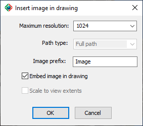

|
|
Toolbar:
Menu: CAD-Earth > Mesh commands > Mesh Viewer
|
|
|
Command line: CE_MESHVIEWER Mesh Viewer toolbar: CAD-Earth version: Premium. |
.png)
.png)
.png)
Command description:
A raster image reference of the current view in the Mesh Viewer can be inserted in the current drawing selecting this toolbar button. The image will be embedded in the drawing or referenced to an external file.

Dialog box to insert an image of the current view in the drawing.
Dialog box settings:
•Maximum resolution. Can be from 512 to 4096 pixels.
•Path type. If you uncheck the embed image in drawing option, you can reference the image to a external file. The path to this file can be of the following:
•Full path. Image file must be located in the path selected.
•Relative path. The image file must be located in a subfolder or in a parent folder relative to where the drawing file is saved.
•No path. The image file must be located in the same path as the drawing or in any of the support file paths.
•Image prefix. Raster image reference created by CAD-Earth will have this text prepended to their name.
•Embed image in drawing. If you select this option, the image information will be saved in the drawing, and an external image file will not be created.
•Scale to view extents. If the current view is in orthographic mode, you can check this option to insert the image with the same dimensions as the current viewport.
Tips:
•If you open the drawing file on another computer where CAD-Earth is not installed, and you check the embed image option, the file ARQCFixedImage.dbx located in the CAD-Earth folder must be included in the same path as the drawing file and manually loaded with the APPLOAD command to display the image.
•If you open the drawing file on another computer, and you uncheck the embed image option, the external image file must be located according to the path type selected (at the exact or relative path or in the same path as the drawing file).
•If you select the predefined plan view in Mesh Viewer and select the scale to view extents option, the image will be inserted with real-world dimensions and you can accurately trace over it.
•If you are concerned about the drawing file size, uncheck the embed image in drawing option so the image data will not be saved in the drawing.
Copyright © 2023 Arqcom Software
Google Earth© is a registered trademark of Google inc. All other trademarks are the property of their respective owners.